CONEXIONES BANCARIAS AUTOMATICAS PARA CHILE Y MEXICO
CONECTA TUS BANCOS CON ODOO PARA REGISTRAR LOS EXTRACTOS BANCARIOS AUTOMATICAMENTE
Este modulo usa el servicio de "https://fintoc.com" para conectar las cuentas bancarias con Odoo y obtener y crear la informacion de los extractos bancarios en Odoo automaticamente.
Debe crear una cuenta en "https://dashboard.fintoc.com/signup" y registrar los bancos que se van a conectar con Odoo. Para mas informacion sobre la creacion de la cuenta en Fintoc, consulte la documentacion oficial de "https://docs.fintoc.com/docs/quickstart"
En Odoo, se debe crear los diarios de banco y en la pestana "Asientos contables" en la configuracion del diario, se debe crear el numbero de cuenta bancaria.
Configuracion de los bancos en Fintoc:
- Una vez creada la cuenta en Fintoc, ir a Dashboard / Links y seleccionar el boton "Conectar".
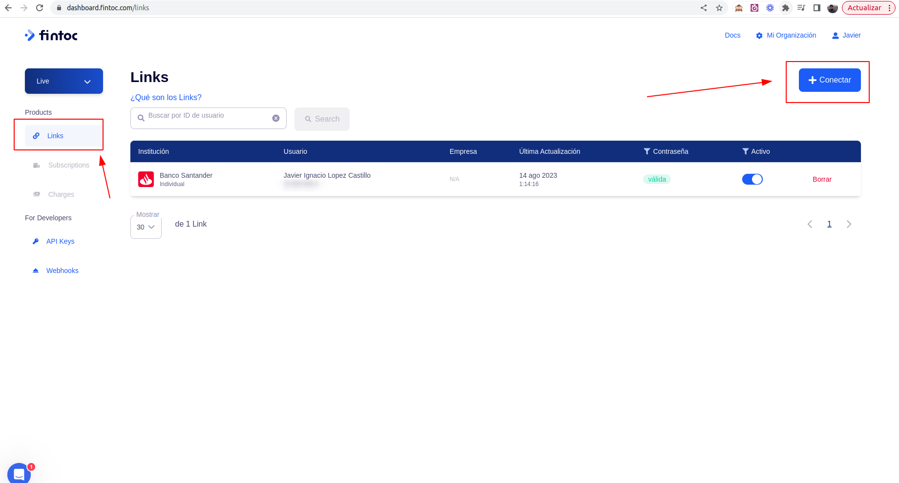
- En la ventana emergente, seleccionar el pais, en la opcion "API" seleccionar "Banking" , en el "Tipo De Cuenta" seleccionar "Individual" o "Empresas" y luego seleccionar el boton "Conectar via Link".
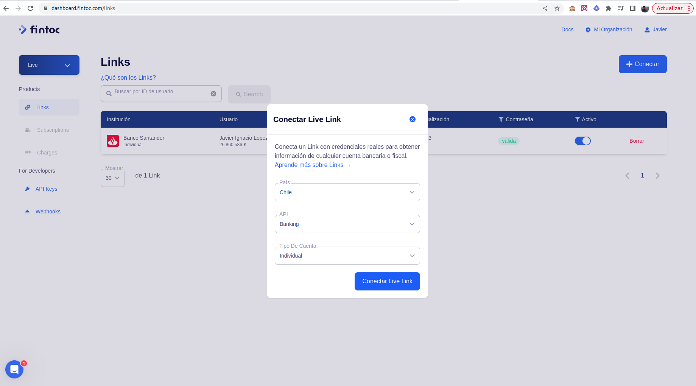
- En la siguiente ventana, seleccionar "Continuar".
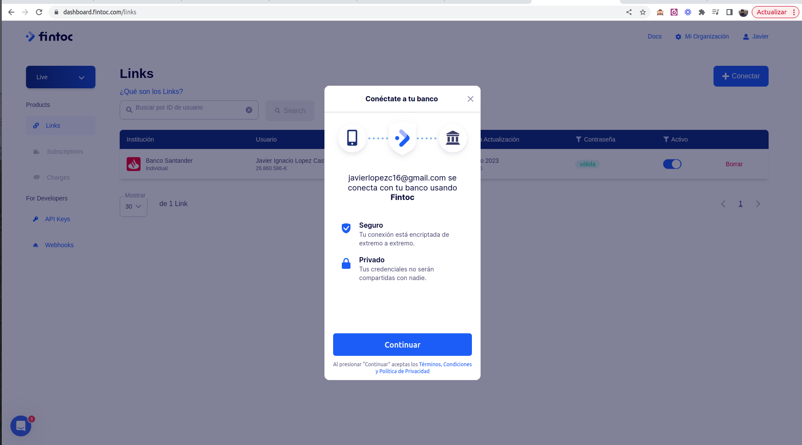
- En la siguiente ventana, seleccionar el banco haciendo click sobre el icono del mismo.
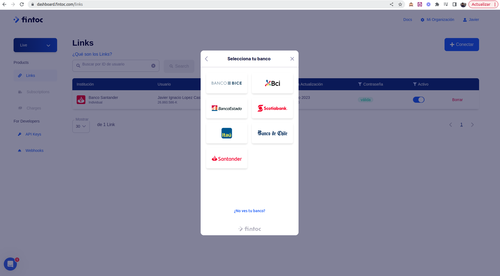
- Ingresar las credenciales del banco, esto proceso tomara alrededor de 30 segundos. Una vez se muestra el mensaje "Conexion exitosa", seleccionar el boton "Listo".
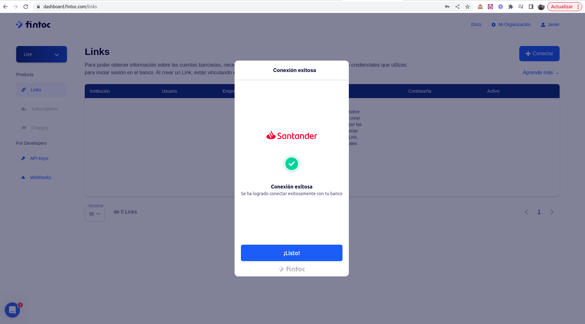
- Se mostrara un mensaje de que el Link se creo exitosamente. Este Link se debera copiar y guardar en un lugar seguro.
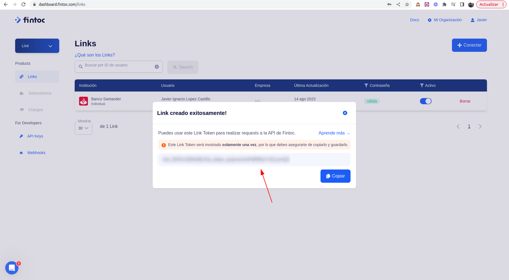
Configuracion de la API Key en Odoo:
- En Fintoc, ir a "API KEYS" y copiar la "Secret Key"
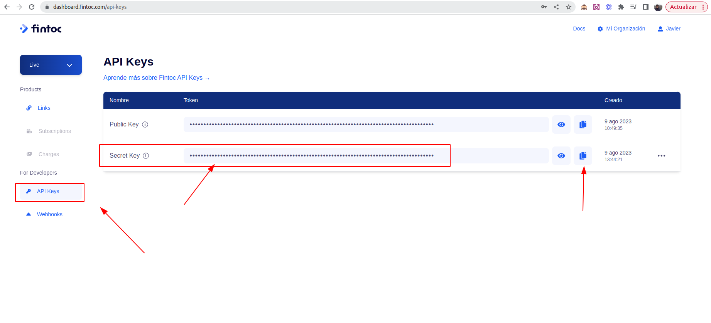
- En Odoo, ir a Ajustes / Usuarios y seleccionar cualquier usuario (preferentemente el usuario administrador). En la ficha del usuario, ir la pestana "Configuracion avanzada"
e ingresar la "Secret Key" en el campo "Fintoc Api Key"
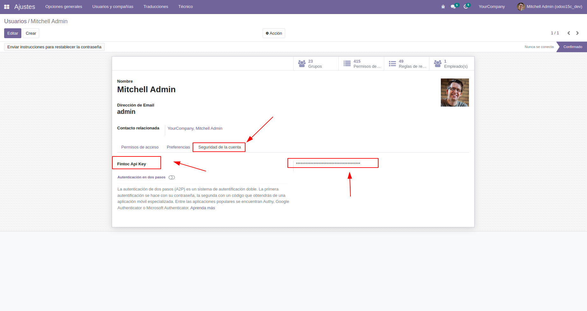
Configuracion de los diarios bancarios en Odoo:
- Ir a Facturando o Contabilidad / Configuracion / Diarios contables y en la pestana Asientos Contables crear el numero de cuenta bancaria.
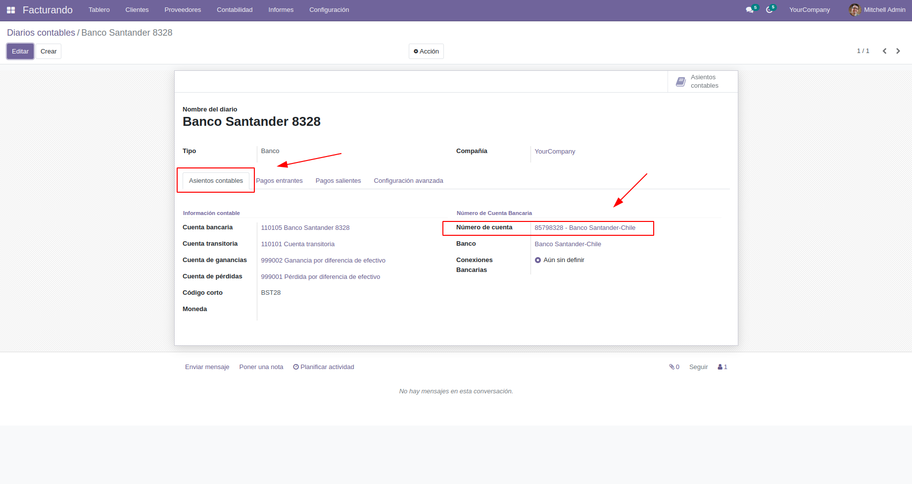
- Luego, en la pestana "Configuracion avanzada" ingresar el Link en el campo "Fintoc Link Token" obtenido en el paso 6 durante la creacion del banco en Fintoc.
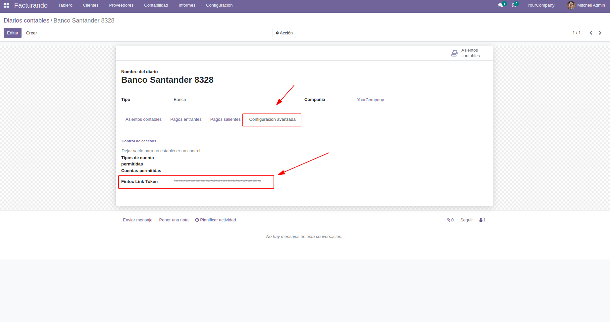
- Una vez configurados los diarios bancarios, Odoo se encargara de conectarse a las cuentas bancarias y crear los extractos bancarios en cada diario. Por defecto, el modulo ejecuta el proceso una vez al dia.
Si desea modificar esta frecuencia debe ir a Ajustes / Activar modo desarrollador . Luego, volver a Ajustes / Tecnico / Accciones Planificadas / Fintoc Listar Movimientos . Editar la frecuencia
en "Ejecutar cada" y "Siguiente fecha ejecucion" para modificar la hora de ejecucion.
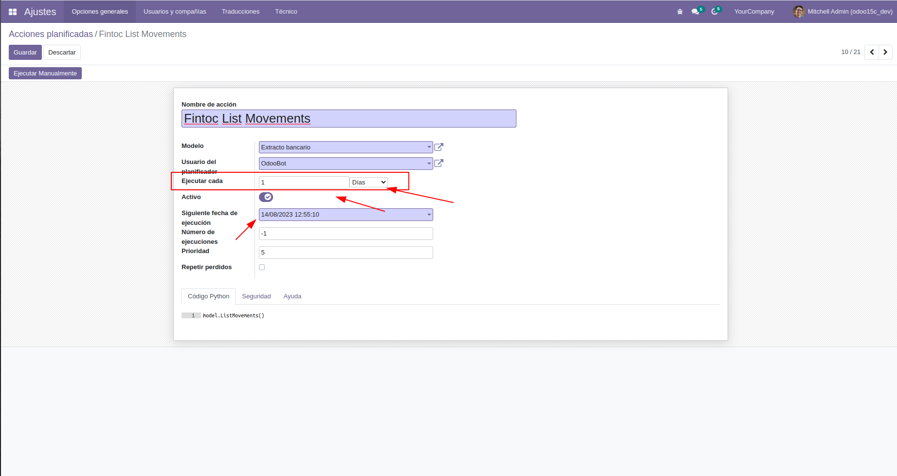